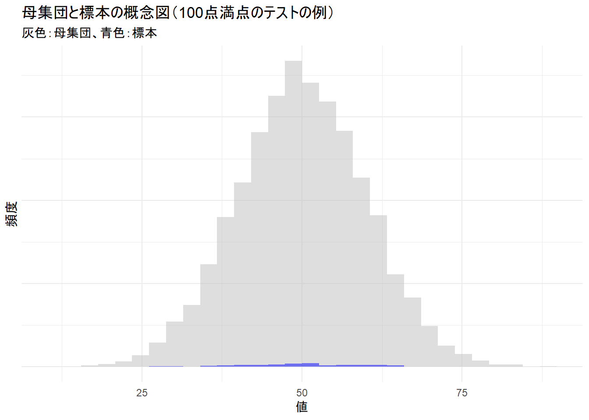
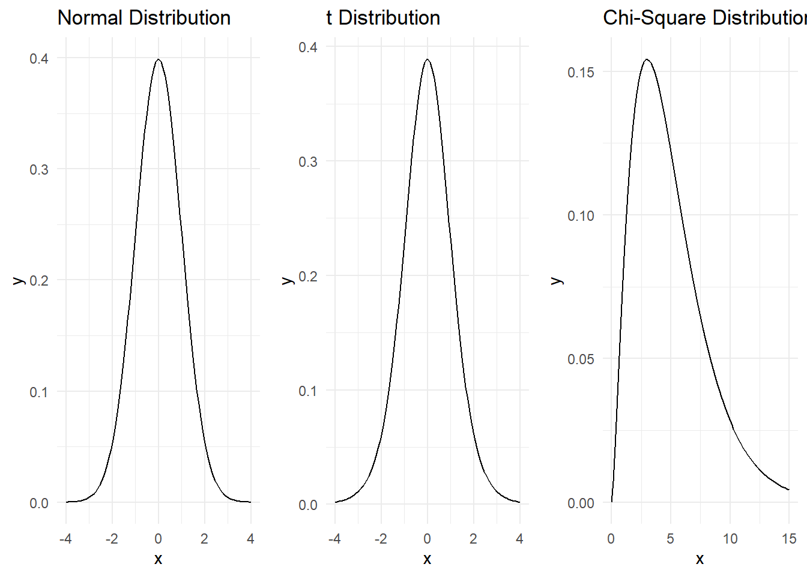
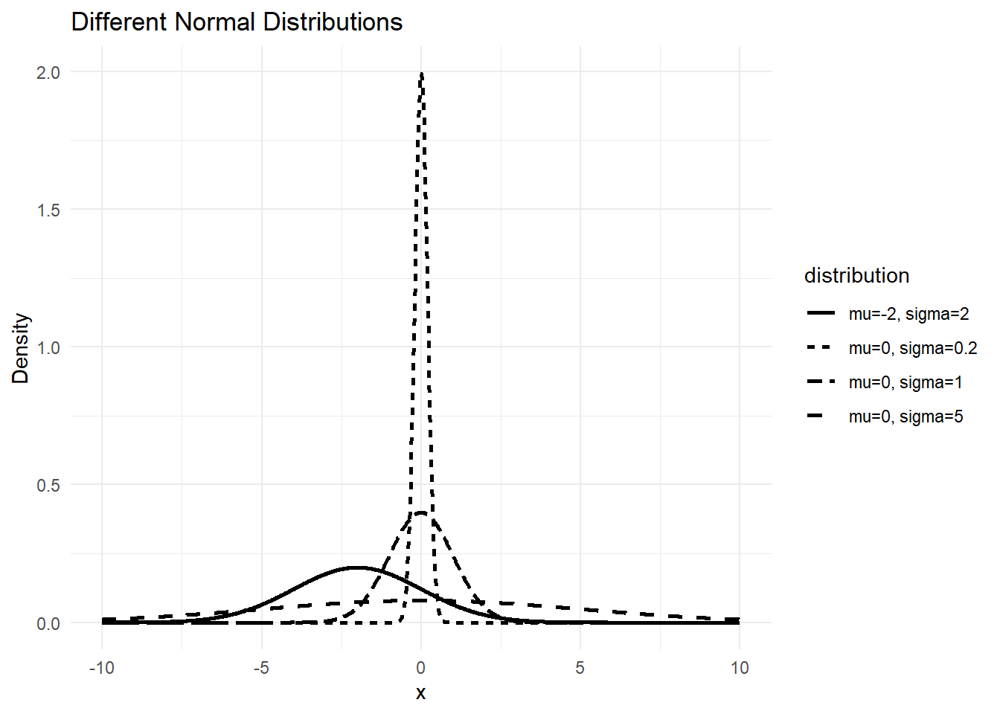
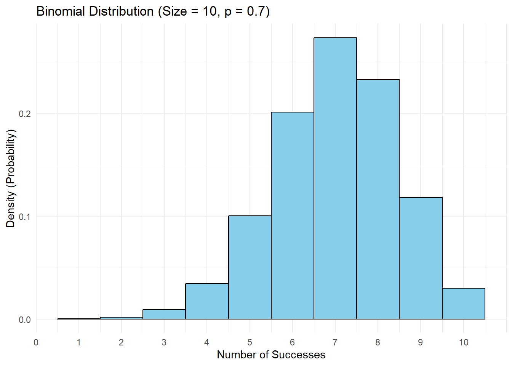
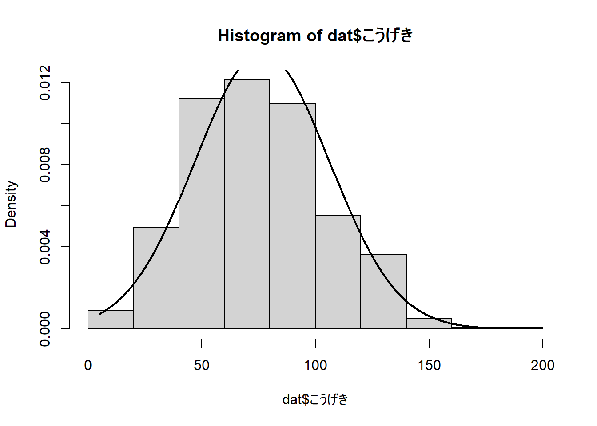

Week 3：推測統計学
事前の確認
この講義のRプロジェクトを開いていますか？
英数字で名前を付けた本日の講義のファイルを作成しましたか？
- .Rでも.Rmdでもどちらでも大丈夫です。
今日の目標
- 母集団と標本の違いや確率分布が理解できる
- 区間推定の考え方が理解できる
母集団と標本
- 推測統計学は、母集団から標本を得て、母集団の特徴を推測する手法
母集団（population）
調べたい対象の集団のこと
例
研究課題：英語を第二言語として学ぶ人は母語の影響を必ず受ける。
母集団：世界中の英語を第二言語として学ぶ人
標本（Sample）
実験や調査のために母集団の中から選ばれたもの
- 選ぶことを標本抽出（sampling）と呼ぶ
確率と確率変数
- 推測統計学では確率が非常に重要な概念。
確率
確率変数と確率分布
確率変数（random variable）
確率的に生じる事象に数値を割り当てたもの
- 実際に得られた値のことを確率変数の実現値という
確率変数はスロットマシーンが回っている状態。実現値はスロットマシーンが止まって値が定まった状態をイメージするとよい
確率分布（probability distribution）
確率変数の実現値それぞれの生じやすさを確率で表したもの。統計学では、確率変数の実現値を与えると確率を返す関数のことを確率分布という
事象を確率変数として扱うことで、母集団を人の集団ではなく、確率変数の実現値の集合として考えることができる。
- 1万人の学生の集団という母集団が、数値が1万個ある集団と仮定でき、数学的な枠組みとして考えやすくなる（数学の世界に現実世界を映す）。
この場合、母集団の性質を標本に正確に反映させるために、単純無作為抽出（simple random sampling）を行う必要がある。
- 母集団のすべての対象が偏りなく選ばれること（= 無作為に選ぶ）
確率分布の種類
- 離散型確率分布：確率質量関数
- とびとびの値をとる（e.g., 裏、表）
- ベルヌーイ分布、二項分布、ポアソン分布

- 連続確率分布：確率密度関数
- 連続した値をとる（e.g., 身長）
- 正規分布、t 分布、カイ二乗分布

推測統計学の考え方
標本統計量
標本から計算される記述統計量のこと
標本平均：母集団から得た標本のデータの平均値
- 母平均：母集団の平均値
標本分布
標本統計量が確率的に変動することを表した確率分布のこと
- 標本を沢山抽出した場合であって、1つのデータの分布ではない
標本サイズ（ k ）が大きくなるにつれ、標本分布の散らばりはどんどん小さくなる
以下の図では100ほどのデータがあれば母平均（0.7）の ± 0.1にほとんどのデータが集まることが分かる
しかし、これは母平均を事前に把握している場合を例であり、事前に母平均を知っていることは基本的にない。

区間推定の考え方
母集団分布に確率分布を仮定する
母集団分布が未知の場合、母集団からある値が標本として選ばれる事象の確率が。よく知られた確率分布に従うと仮定する。
統計モデル（statistical model）や確率モデル（probabilistic model）と呼ぶ
よく知られたモデルとして、正規分布（normal distribution）が挙げられる
適切な確率モデルを設定しなければ、そこから算出したデータは正確ではない。
ある程度大きいデータを取り、そのヒストグラムを描画して形状を確認する
データの発生メカニズムから選ぶ
- 例. 反応速度は対数正規分布で近似する、発生確率の低い出来事はポワソン分布に近似する
正規分布の性質
確率分布は形状を決めるパラメータがある。
正規分布のパラメータ：平均（確率分布の位置） + 分散（確率分布の広がり）
- 期待値（Expected value）：確率分布の平均値のこと

確率変数が離散的な値をとる場合、確率変数の実現値と確率は一対一対応している（例 1か0のデータ）。
例）下記図のように10回繰り返した場合、
成功数（5回） => 確率10%
成功数（6回） => 確率20%

- 確率変数が連続的な値をとる場合、実現値の値ではなく、その範囲と確率が対応する。つまり、確率分布の面積が確率と対応する（数値積分をして求めないといけない）。

- 積分する関数
integrateを用いて、平均0、分散1の正規分布の実現値が0から1の範囲を求める。その結果はおよそ34.1%になる。
stats::integrate(f = dnorm, lower = 0, upper = 1)0.3413447 with absolute error < 3.8e-15absolute errorは、計算における誤差です。integrate関数は数値積分を行いますが、この方法で積分された結果は理論上正しい結果とズレ（誤差）があります。このズレが正負無視してどれくらいあるかの数値です。
平均値 ± 1.96 × 標準偏差で、標本分布の95%の範囲になる。
白い部分は二か所合わせてデータの5%
[1] 2.055362
mean(density_data$x) ± 1.96となっているのは、標準偏差が1であるため。
integrate(f = dnorm, lower = mean(density_data$x) - 1.96, upper = mean(density_data$x) + 1.96)0.9489619 with absolute error < 9.2e-12確率モデルを用いた推定
- 適切な確率モデルが設定されているとき、母数を推定することは、確率モデルのパラメータがどのような値であるかを推測することと同じ。
正規分布モデルにおける標本平均の標本分布
標準誤差（Standard Error: SE）
- 標本分布の標準偏差
\[ SE = \frac{\sigma}{\sqrt{n}} \]
n = 標本サイズ
- 標本サイズが大きいほど標準誤差は小さくなり、標本平均は母平均に近づく（分母に標本サイズ）
区間推定
点推定（point estimation）：平均値のように1つの値によって母数（母平均など）を推定すること
- 標本サイズがどれだけ大きくても、標本平均は確率的に変動するため、ずばり母数を当てることは難しい
信頼区間
区間推定（interval estimation）：区間による推定を行うこと
必ずこの区間に当てはまることは主張できない。そのため、区間推定では、信頼度（degree of confidence）を設定する。これを信頼区間（confidence interval）という。
- 言語研究の分野では95%が一般的
母分散を事前に知っている場合
標本サイズは25、標本平均99.46、母分散は4を例とする。よって標準誤差は0.4。
「得られた標本統計量が95%の信頼度で否定されない母数の範囲」を考える => 標本平均99.46が95%上限ぎりぎりになるような母数と、95%下限ぎりぎりになるような母数の範囲。上記で扱ったように、面積の95%を塗りつぶすには、平均値から ± 1.96 × 標準偏差すればよい。
下限：99.46 - 1.96 × 0.4 = 98.68
上限：99.46 + 1.96 × 0.4 = 100.24
- 下記の図の赤い点線の内側の範囲が95%信頼区間

母分散を知らない場合
母分散が分からない場合の母平均の推定方法を扱う。現実的に、母分散が分かっていることはほとんどない。
母分散が分からない場合、上記の算出法では母平均の区間推定はできない。従って、母分散に依存しない統計量の計算が必要となる
t 値を用いた信頼区間の計算
- t 値：下記の式から算出できる値。t分布に従う。
[ t = ]
t分布には、自由度（degree of freedom）と呼ばれるパラメータがある。t分布の自由度は、標本サイズによって変わる。自由度は、 n - 1で計算できる。
自由度が100くらいになると、標準正規分布（平均0, 標準偏差1の正規分布）と同じような形になる。
母平均が分からない場合、上記のt値を計算することはできない。しかし、母平均の信頼区間を求める場合、t分布の95%の面積にああるような範囲を考えればいい。自由度25の時、上側と下側それぞれ2.5%（5% ÷ 2）となるようなt値を求める（表から値を探したりして値を見つける）。
Rの標準的な関数で求めることも可能
qt(.975, df = 24)[1] 2.063899qt(.025, df = 24)[1] -2.063899以下の式をもとに算出する
[ ( {x} - t_{/2, , n-1} , {x} + t_{/2, , n-1} ) ]
- u^2は不偏分散であり、以下の式で求められる。自由度25、標準偏差が2.24の場合、nに25、Sに2.24を代入する。しかし、標本サイズが大きいときはほとんど同じ値になるため、実用上標本分散を用いることもある。
[ s^2 = S^2 ]
上限：99.46 + 2.06 * sqrt{}
下限：99.46 - 2.06 * sqrt{}
- 98.52 - 100.40の間に母平均があると推定された
Rの関数で95%信頼区間を求める
gmodels::ci(mtcars$mpg)Warning in ci.numeric(mtcars$mpg): No class or unkown class. Using default
calcuation. Estimate CI lower CI upper Std. Error
20.090625 17.917679 22.263571 1.065424 - ci関数と一致した
mean(mtcars$mpg) + qt(df = (nrow(mtcars)-1), .025) * sd(mtcars$mpg)/sqrt(nrow(mtcars))[1] 17.91768mean(mtcars$mpg) + qt(df = (nrow(mtcars)-1), .975) * sd(mtcars$mpg)/sqrt(nrow(mtcars))[1] 22.26357不偏分散の不偏とは 推測統計学では一致性（consistency）、不偏性（unbiasedness）、有効性（efficiency）という概念が重要となります。詳しい説明は別の機会に行いますが、不偏分散は不偏性をもつ推定量のことを表します。不偏性とは推定量の期待値が母数と一致する性質になります。標本平均は不偏推定量ですが、標本分散、標本標準偏差は不偏推定量ではありません。つまり、母分散と標本分散にはズレが存在します。このズレを調節するため、n - 1で偏差二乗和を割っています（割る数が-1だけ減るので、標本分散より少し大きくなる）。
ハンズオンセッション
データの読み込み
- 先週の講義で配布。
dat <- read.csv("sample_data/pokemon_data.csv")データの中身を確認
summary(dat) id 名前 タイプ1 高さ
Min. : 1 Length:897 Length:897 Min. : 0.100
1st Qu.:225 Class :character Class :character 1st Qu.: 0.500
Median :449 Mode :character Mode :character Median : 1.000
Mean :449 Mean : 1.186
3rd Qu.:673 3rd Qu.: 1.500
Max. :897 Max. :20.000
重さ 世代 ステータス HP
Min. : 0.10 Min. :1.000 Min. :175.0 Min. : 1
1st Qu.: 8.50 1st Qu.:2.000 1st Qu.:320.0 1st Qu.: 50
Median : 27.00 Median :4.000 Median :440.0 Median : 65
Mean : 64.03 Mean :4.143 Mean :422.9 Mean : 69
3rd Qu.: 65.00 3rd Qu.:6.000 3rd Qu.:500.0 3rd Qu.: 80
Max. :999.90 Max. :8.000 Max. :720.0 Max. :255
こうげき ぼうぎょ とくこう とくぼう
Min. : 5.00 Min. : 5.00 Min. : 10.00 Min. : 20.00
1st Qu.: 55.00 1st Qu.: 50.00 1st Qu.: 46.00 1st Qu.: 50.00
Median : 75.00 Median : 67.00 Median : 65.00 Median : 65.00
Mean : 76.54 Mean : 71.88 Mean : 69.67 Mean : 69.87
3rd Qu.: 95.00 3rd Qu.: 90.00 3rd Qu.: 90.00 3rd Qu.: 85.00
Max. :181.00 Max. :230.00 Max. :173.00 Max. :230.00
すばやさ 捕まえやすさ 進化 画像URL
Min. : 5.00 Min. : 3.00 Min. :0.000 Length:897
1st Qu.: 45.00 1st Qu.: 45.00 1st Qu.:1.000 Class :character
Median : 65.00 Median : 60.00 Median :1.000 Mode :character
Mean : 65.93 Mean : 97.85 Mean :1.418
3rd Qu.: 85.00 3rd Qu.:150.00 3rd Qu.:2.000
Max. :200.00 Max. :255.00 Max. :3.000 head(dat) id 名前 タイプ1 高さ 重さ 世代 ステータス HP こうげき ぼうぎょ
1 1 フシギダネ くさ 0.7 6.9 1 318 45 49 49
2 2 フシギソウ くさ 1.0 13.0 1 405 60 62 63
3 3 フシギバナ くさ 2.0 100.0 1 525 80 82 83
4 4 ヒトカゲ ほのお 0.6 8.5 1 309 39 52 43
5 5 リザード ほのお 1.1 19.0 1 405 58 64 58
6 6 リザードン ほのお 1.7 90.5 1 534 78 84 78
とくこう とくぼう すばやさ 捕まえやすさ 進化
1 65 65 45 45 1
2 80 80 60 45 2
3 100 100 80 45 3
4 60 50 65 45 1
5 80 65 80 45 2
6 109 85 100 45 3
画像URL
1 https://raw.githubusercontent.com/PokeAPI/sprites/master/sprites/pokemon/other/official-artwork/1.png
2 https://raw.githubusercontent.com/PokeAPI/sprites/master/sprites/pokemon/other/official-artwork/2.png
3 https://raw.githubusercontent.com/PokeAPI/sprites/master/sprites/pokemon/other/official-artwork/3.png
4 https://raw.githubusercontent.com/PokeAPI/sprites/master/sprites/pokemon/other/official-artwork/4.png
5 https://raw.githubusercontent.com/PokeAPI/sprites/master/sprites/pokemon/other/official-artwork/5.png
6 https://raw.githubusercontent.com/PokeAPI/sprites/master/sprites/pokemon/other/official-artwork/6.png確率分布を選ぶ
データの可視化
hist(dat$こうげき)
正規分布をあてはめてみる
# x軸の範囲を決定
x <- seq(min(dat$こうげき), max(dat$こうげき), length.out = nrow(dat))
#min(dat$こうげき) から max(dat$こうげき) まで、データの数 (nrow(dat)) だけ 等間隔 に区切った値を x に入れる。これを使って、なめらかな曲線を描画するための基準点を作る
# ヒストグラムを確率密度で描画
hist(dat$こうげき, probability = TRUE)
#probability = TRUE を指定すると、ヒストグラムの y軸が「確率密度」になる。分布をあてはめるときは、この設定をしないと当てはまらない。デフォルト（probability = FALSE）では「度数」（データの数）になる
# 正規分布の確率密度関数を描画
#「データの分布が もし正規分布に従っていたら どんな形になるか？」を、ヒストグラムの上に描く。
#dnorm() は 正規分布 の確率密度関数を計算する。
#平均 (mean(dat$こうげき)) と 標準偏差 (sd(dat$こうげき)) を使って 「理想的な正規分布」 の形を作る。lwd = 2で線の太さを少し太くする
lines(x, dnorm(x, mean = mean(dat$こうげき), sd = sd(dat$こうげき)), lwd = 2)
母分散未知の母平均の95%信頼区間を求める
母平均を得られたデータから推定しよう
ポケモンのデータを読み込み、ci関数とqt関数で95%信頼区間求めてみよう。
- qt関数では、t値を使い、式を作って計算する必要があります
ci関数
- 今回の警告メッセージは無視してOK（参考）
#install.packages("gmodels")
library(gmodels)Warning: package 'gmodels' was built under R version 4.3.3ci(dat$こうげき)Warning in ci.numeric(dat$こうげき): No class or unkown class. Using default
calcuation. Estimate CI lower CI upper Std. Error
76.5406912 74.5956429 78.4857395 0.9910493 qt関数
必要なパーツ：平均値、t値、標本標準偏差（本当は\(\sqrt{\text{不偏分散}}\) = 不偏標準偏差）、サンプル数
- sd関数は、標準偏差を算出する関数だが、分母をn-1した値を返している（= 不偏標準偏差）
n <- nrow(dat) #サンプル数
m <- mean(dat$こうげき) #平均値
t_value <- qt(df = n - 1, .975) #t値
sd <- sd(dat$こうげき)#標本標準偏差
lower <- m - t_value * sd/sqrt(n) #下限
upper <- m + t_value * sd/sqrt(n) #上限
lower[1] 74.59564upper[1] 78.48574- 下限はこっちでも同じ値になる
t_value_low <- qt(df = n -1, .025)
lower2 <- m + t_value_low * sd/sqrt(n)
lower2[1] 74.59564次週までの課題
課題内容
小テストに向けて今回の内容を復習する。必ず手でコードを入力してRを実行する。
下記のデータをもとに、どの指標でもよいので、以下の内容を含めること。ただし、データには連続と離散のデータがあることに注意。また、ポケモンidの箱ひげ図を求めても意味がないなど、データの特徴を踏まえて分析すること。
データ内のどの変数（こうげき、ぼうぎょなど）でもよいので、箱ひげ図とヒストグラムでデータを可視化する
ヒストグラムに正規分布をあてはめた図を描画する
ci関数とqt関数でこうげき以外の変数の95%信頼区間を算出する
- どちらの関数も値は一致します
データの詳細は前の章の「次週までの課題」セクションを参照
提出方法
- R Markdownファイルで作成し、HTMLファイルに変換しTACTへ提出
- 締め切りは今週の木曜日23:59まで
参考文献
- 📚清水（編著）（2021）『心理学統計法 (放送大学教材 1638)』放送大学教育振興会
- 📚平井・岡・草薙（編著）（2022） 『教育・心理系研究のためのＲによるデータ分析―論文作成への理論と実践集』東京図書
- 💻ポケモンで学ぶデータ分析｜データの中身を知ろう